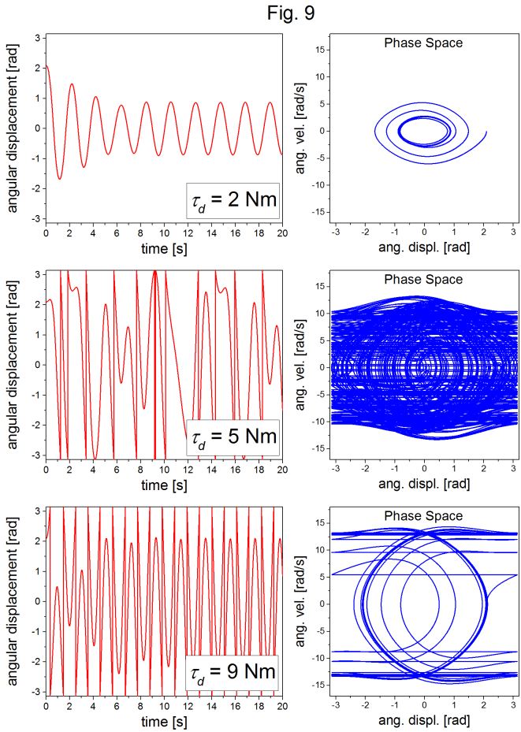

With a properly working model, and no exact solution with which to compare, the student should look for some kind of convergence behavior in the computational solution as is systematically made smaller. Figure 1 demonstrates this convergence behavior.
In EJSS, Using Runge Kutta 4 as solver, dt = 0.01 to 0.05 is an
acceptable time step for accuracy.
The parameters used to produce the computational solutions shown in figure 1 were: . There a four curves in figure 1, that represent four different time steps. Lines are shown connecting the points that represent the discrete computational solutions. As is decreased the solution asymptotically approaches a specific shape and position. Upon close examination, one can just barely see the green dots () to the left of the blue curve (). Reducing by the factor of ten from to does not produce a very significant change in the computational solution. Lowering even further may not produce a sufficient improvement in accuracy to be worth the extra computational time required.
Figures 2 and 3 show the angular displacement and angular velocity, respectively, as a function of time for the parameters listed above, and s.
These graphs represent the oscillatory behavior of a pendulum. The angular velocity is out of phase with the angular displacement, as expected.
The parameters used for these plots were:.
Figure 4 shows a comparison between the computational solution and the function
for the angular displacement in the small angle approximation. The parameters used were: .
i speculate the suggested answers are wrong.
For an initial angular displacement of 0.26 radians (), the computational solution matches the small angle approximation well until about the 3rd or 4th period. Figure 5 shows a zoomed-in view of the 4th maximum, showing that the difference between the two curves grows in time.
Figure 6 shows the same comparison for an initial angular displacement of 2.1 radians (). There is a clear deviation between the computational solution and the small angle approximation observed at the outset. The small angle approximation underestimates the period of oscillation, and obviously isn’t a good approximation for large angles.
Figure 7 shows a phase space plot (angular velocity vs. angular displacement) for three initial angular displacements, 0.26 rad (), 1.3 rad (), and 2.1 rad ().
The parameters used for figure 7 were . For the undamped, unforced SHO, the phase space trajectory is a well-defined closed path. It should also be emphasized that there is a direction of circulation around the closed orbit, the direction of which depends on the initial conditions.
Figure 8 shows the angular displacement and corresponding phase space plots for three different values of the damping strength, as labeled in the figure. The other parameters used were .
As expected, the oscillations become damped, and the corresponding phase space trajectory spirals in towards zero as the energy approaches complete dissipation. For a value of roughly and above, there are no longer oscillatory solutions.
Figure 9 shows shows the angular displacement and corresponding phase space plots for three different values of the driving torque as labeled in the figure. The other parameters used were . The phase space plots were generated with 200,000 time steps.

For the lowest value of the driving torque, after the transient response, the system settles into predictable oscillatory behavior, and a well defined elliptical orbit in phase space. But, with higher driving torques, the system shows an apparently unpredictable non-repeating oscillatory behavior, with the corresponding phase space characterized by many orbits that can appear, as the case of , to be completely random. This behavior is chaotic.
Though chaos identification is beyond the scope of this exercise set, the phase space results of Exercise 5 provide a good opportunity to demonstrate to students the chaotic coincidental nature of deterministic solutions and unpredictability.